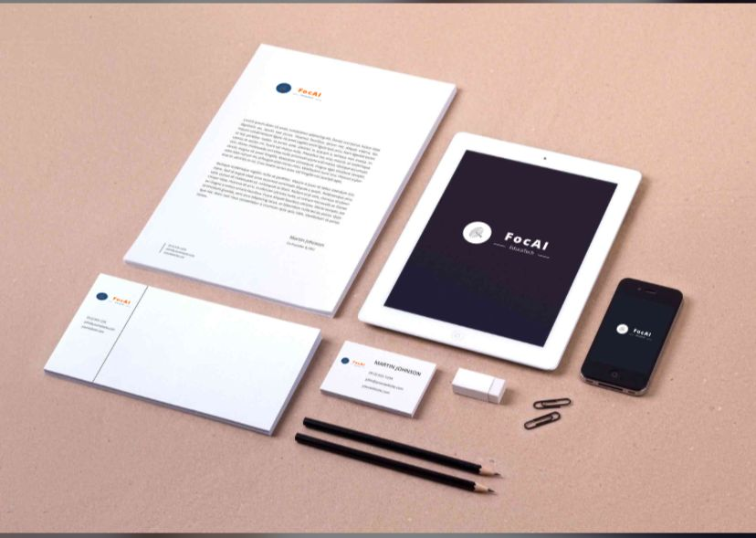

A Tríade IA de Conhecimento é uma abordagem revolucionária no campo da educação, integrando inteligência artificial, análise de dados e aprendizado personalizado para criar um ambiente educacional mais eficaz e adaptativo. Nossa tecnologia avançada permite a identificação de padrões de aprendizado e necessidades individuais dos alunos, fornecendo insights valiosos para professores e criando estratégias de ensino sob medida. Com a Tríade IA de Conhecimento, estamos transformando a maneira como o conhecimento é adquirido e compartilhado, promovendo uma experiência educacional mais enriquecedora e acessível. O projeto é composto pela tríade IA:Plataforma FocAI, App FocAI e a Pulseira ....Com o designer minimalista,
A plataforma Focaí é uma solução educacional robusta e interativa, projetada para ajudar professores e alunos a maximizar seu potencial. Focada em oferecer um ambiente de aprendizado dinâmico e envolvente, a Focaí utiliza recursos multimídia, atividades interativas e ferramentas de colaboração para manter os alunos engajados e motivados. Com funcionalidades que atendem às necessidades específicas de cada estudante, a plataforma Focaí é o parceiro ideal para escolas e instituições que buscam aprimorar a qualidade do ensino e facilitar o sucesso acadêmico
O aplicativo Focaí é um companheiro indispensável para alunos que desejam otimizar seu tempo de estudo e melhorar seu desempenho acadêmico. Disponível para dispositivos móveis, o Focaí oferece funcionalidades como lembretes personalizados, sessões de estudo guiadas e técnicas de gerenciamento de tempo baseadas em pesquisas científicas. Com uma interface amigável e intuitiva, o aplicativo ajuda os estudantes a manter o foco e a disciplina, garantindo que cada minuto de estudo seja produtivo e eficaz
A pulseira auxiliar no ensino é uma inovação tecnológica projetada para apoiar alunos no processo de aprendizagem, especialmente aqueles com TDAH. Equipado com sensores avançados, o dispositivo monitora os níveis de atenção e concentração do usuário, fornecendo feedback em tempo real. Conectada à plataforma Focaí, a pulseira oferece sugestões personalizadas para melhorar o foco e ajustar as atividades de estudo conforme necessário. Esta ferramenta única transforma o aprendizado, proporcionando um suporte contínuo e adaptativo que ajuda os alunos a alcançar seu pleno potencial.